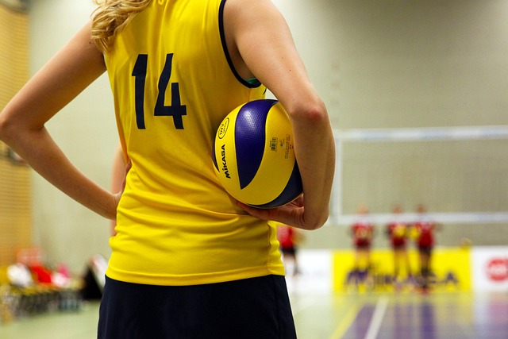

BERENANG
Manfaat Berenang bagi Tubuh dan Mental Selain meningkatkan metabolisme, renang diketahui dapat membantu memperbaiki masalah postur tubuh sekaligus melatih ketahanan otot. Namun, tidak hanya sampai disitu, manfaat berenang adalah hal yang tak boleh terlewatkan, karena bukan hanya untuk kesehatan tubuh saja, tetapi juga mental. Pasalnya, renang juga berguna sebagai pengalihan dari stres. Untuk manfaat renang selengkapnya akan dibahas berikut ini. 1. Membangun Massa Otot Manfaat renang yang pertama adalah membangun massa otot, hal ini karena dalam gerakan renang, hampir seluruh otot tubuh bergerak melawan tekanan air Dari situlah, kekuatan dan kelenturan massa otot tubuh terlatih. Renang juga baik dilakukan untuk mengecilkan betis dan membuatnya lebih kencang. 2. Menurunkan Berat Badan Selanjutnya, manfaat berenang adalah menurunkan berat badan. Diketahui bahwa berenang selama satu jam mampu membakar sekitar 400-700 kalori, tergantung pada intensitas renang yang dilakukan. Nah, bagi Anda yang sedang dalam masa diet dan ingin menurunkan berat badan lebih cepat, maka bisa menjadikan renang sebagai pilihan olahraga rutin. Selain itu, manfaat berenang bagi tubuh adalah mengurangi jaringan lemak di perut sehingga dapat membantu mengecilkan perut. 3. Kesehatan Jantung dan Paru-paru Meski tidak seberat ketika Anda berlari atau senam aerobik, namun manfaat berenang adalah setara dengan olahraga kardio lainnya. Jenis olahraga ini akan membantu melancarkan aliran oksigen dan darah sehingga baik untuk kesehatan jantung dan paru-paru. Hal tersebut didukung oleh sebuah penelitian yang menunjukkan bahwa perenang cenderung mempunyai paru-paru lebih sehat dibandingkan atlet lain. 4. Mengendalikan Stres Tidak hanya untuk kebugaran jasmani saja, tetapi yang dapat Anda peroleh dari manfaat berenang adalah kesehatan mental. Pasalnya, berenang terbukti mampu memperbaiki suasana hati serta menurunkan risiko stres dan depresi. Selain itu, manfaat renang juga dapat memperlambat demensia hingga penurunan fungsi berpikir. Bagi pengidap gangguan kecemasan dan depresi, renang diketahui dapat membantu mengurangi gejala stres dan membuat pikiran lebih tenang jika dilakukan secara rutin. Baca Juga: 6 Manfaat Pemanasan sebelum Olahraga dan Tips Melakukannya 5. Mengatasi Saraf Kejepit Saraf kejepit merupakan kondisi yang cukup mengganggu dan dapat menghambat aktivitas Anda sehari-hari. Akibatnya, pengidap saraf kejepit tidak bisa banyak bergerak dan lebih sering beraktivitas di tempat tidur, di mana hal ini justru dapat melemahkan otot. Nah, salah satu manfaat berenang adalah untuk mengatasi saraf kejepit. Gerakan dalam renang dapat membuat tulang belakang dan otot-otot punggung lebih rileks. Anda dapat berkonsultasi dengan pelatih atau dokter guna mendapatkan saran mengenai gaya berenang yang tepat. 6. Mengurangi Nyeri Sendi Renang termasuk olahraga yang dianjurkan bagi pengidap arthritis, karena olahraga ini dapat mengurangi rasa nyeri akibat peradangan sendi. Dalam penelitian lain juga ditemukan bahwa pengidap osteoporosis yang berenang dengan rutin mengalami penurunan nyeri sendi. 7. Mengatasi Insomnia Renang termasuk salah satu jenis olahraga tersebut dapat menjadikan tubuh lebih bugar dan membuat tidur lebih nyenyak, sehingga cocok untuk mengatasi insomnia. Rutin berenang akan meningkatkan kualitas tidur seseorang. Hal tersebut karena, berenang dapat mengurangi stres yang sering kali dapat menyebabkan insomnia. 8. Baik bagi Penderita Asma Selanjutnya, manfaat berenang adalah meningkatkan kapasitas paru-paru dan melatih mengontrol pernapasan. Dengan begitu, olahraga ini sangat baik bila dilakukan secara rutin oleh penderita asma untuk melatih pernapasan. Namun, hal ini perlu konsultasi lebih lanjut dengan dokter, pasalnya beberapa studi menyebutkan bawah kolam renang yang mengandung kaporit justru dapat memicu asma. Seperti yang sudah dijelaskan, manfaat berenang adalah hal yang sangat sayang dilewatkan. Karena itu, tidak ada salahnya Anda rutin melakukan olahraga renang 2-3 kali seminggu. Rutin berenang akan membantu Anda menjaga kesehatan, terlebih melatih otot yang dapat melemah seiring berjalannya usia.
SEPAK BOLA

Manfaat yang didapat dengan bermain sepak bola pun begitu banyak. Mulai daya tahan tubuh yang meningkat, hingga kebugaran fisik yang meningkat menjadi beberapa manfaat yang bisa didapatkan dari bermain sepak bola. Berikut adalah beberapa manfaat sepak bola bagi kesehatan tubuh: Meningkatkan kekuatan tulang Meningkatkan kebugaran Mendukung kesehatan jantung Meningkatkan kekuatan otot tubuh Membantu mengontrol berat badan Meningkatkan koordinasi, keseimbangan, dan kelincahan Meningkatkan kesehatan mental Mengurangi rasa stres dan cemas Melatih kerja sama Menciptakan persahabatan.
VOLY BALL
1. Menguatkan Tulang Manfaat bermain bola voli lainnya adalah menjaga kepadatan dan meningkatkan kekuatan tulang, serta mencegah risiko osteoporosis. Sebab, voli tergolong sebagai latihan beban mengingat Anda harus menahan beban tubuh ketika berlari dan melompat. Semakin banyak aktivitas yang Anda lakukan akan mendorong tulang meningkatkan kepadatannya. Lalu, latihan beban rutin diketahui membantu tubuh mengontrol pelepasan kadar sklerostin, yakni protein alami yang bila menumpuk dapat memicu pengeroposan tulang. 2. Melatih kerja sama tim Permainan bola voli juga melibatkan interaksi sosial dengan banyak orang dalam satu waktu, baik itu rekan satu tim atau lawan. Anda harus bekerja sama dengan baik agar tim bisa mencetak poin dan mencegah lawan memenangkan pertandingan. Interaksi sosial ini mampu meningkatkan perasaan Bahagia. 3. Membuat tidur lebih nyenyak Olahraga bisa membuat Anda tidur lebih nyenyak karena membantu meningkatkan aktivitas enzim dan fungsi otot. Sesekali berolahraga voli selepas bekerja juga membantu merilekskan tubuh di malam hari. Sebuah penelitian yang diterbitkan dalam jurnal Energy and Buildings (2016) menyebutkan kenaikan suhu tubuh yang terjadi saat Anda berolahraga juga ikut membantu Anda tidur nyenyak. Berolahraga intensitas sedang juga membantu mengendalikan berbagai gangguan tidur, seperti insomnia. Namun, jangan berolahraga berlebihan. Aktivitas fisik yang terlalu keras mempengaruhi kondisi tubuh yang semakin kelelahan dan dehidrasi, sehingga membuat Anda lebih sulit tidur. 4. Mengurangi stress Dengan sering berolahraga voli, tubuh bisa meningkatkan aktivitas hormon norepinefrin yang bisa bekerja sebagai antidepresan. Aktivitas hormon endorfin, dopamin, dan serotonin akan menimbulkan perasaan senang dan mengurangi stres, sehingga menciptakan pikiran-pikiran positif. 5. Membantu Turunkan Berat Badan Tahukah Anda, manfaat bermain voli juga bisa membantu menurunkan berat badan dengan efektif. Bisa dibilang, voli merupakan jenis olahraga kardio aerobik yang dapat meningkatkan detak jantung. Dengan demikian, sel-sel dalam tubuh akan membakar lebih banyak total lemak ketika Anda berolahraga dan istirahat. Dikutip dari Harvard Health Publishing, bermain voli santai selama 30 menit mampu membakar 108 kalori. Semakin tinggi intensitas kardio yang Anda lakukan, semakin besar pula kalori yang terbakar. So, jika Anda ingin menurunkan berat badan, manfaat bermain bola voli satu ini patut Anda coba. Di samping berbagai manfaat tersebut, pastikan Anda selalu mengiringi dengan pemanasan dan peregangan ya. Lalu, hindari berolahraga secara berlebihan.
BERSEPEDA
Beberapa Manfaat Bersepeda Berikut ini adalah beberapa manfaat bersepeda bila dilakukan secara rutin, minimal selama 30 menit setiap harinya: 1. Menjaga kesehatan jantung Olahraga sepeda yang yang dilakukan secara rutin dapat membantu memelihara kesehatan jantung. Manfaat bersepeda ini bisa diperoleh karena bersepeda dapat membantu menurunkan kadar kolestrol total dalam tubuh. Artinya, olahraga ini dapat membantu meminimalkan terjadinya penumpukan lemak di pembuluh darah sehingga risiko untuk terkena penyakit jantung menjadi berkurang. 2. Mencegah stroke Bersepeda dapat mengoptimalkan kinerja sistem kardiovaskular, yaitu jantung dan pembuluh darah. Hal ini karena jenis olahraga ini bisa memperkuat otot jantung dan meningkatkan sirkulasi darah ke seluruh tubuh. Dengan kinerja sistem kardiovaskular yang baik, bukan hanya kesehatan jantung saja yang menjadi lebih terjaga, melainkan risiko untuk terkena penyakit stroke juga berkurang. 3. Mengontrol tekanan darah Tekanan darah dapat terkontrol dengan baik jika Anda rutin melakukan olahraga sepeda. Alasannya karena olahraga ini selain bisa memperkuat otot jantung juga bisa memperkuat otot-otot di kaki dan membantu melebarkan pembuluh darah di kaki. Kombinasi ini akan memperlancar aliran darah sehingga efeknya tekanan darah menjadi lebih terkontrol. 4. Menjaga kesehatan otot dan sendi Bersepeda dapat memperkuat otot kaki, bokong, paha, betis, pinggul, perut, lengan, dan bahu. Tak hanya itu, bersepeda juga baik untuk persendian dan telah terbukti bermanfaat bagi penderita osteoartritis. 5. Menurunkan atau mengontrol berat badan Bersepeda dapat membantu membakar lemak dan meningkatkan laju metabolisme tubuh. Hal ini membuat bersepeda bermanfaat untuk menurunkan atau mengontrol berat badan. Namun, manfaat bersepeda ini tentu tidak akan diperoleh secara optimal jika Anda tidak mengonsumsi air putih yang cukup, membatasi asupan kalori, dan tidur yang cukup. 6. Mengurangi stres Saat bersepeda, kadar hormon stres di dalam tubuh, seperti adrenalin dan kortisol, akan menurun. Tak hanya itu, melihat dan menikmati pemandangan saat bersepeda juga dapat menurunkan stres yang dialami. 7. Menurunkan risiko terjadinya diabetes Salah satu manfaat bersepeda lainnya adalah mengurangi risiko terkena diabetes tipe 2. Hal ini karena bersepeda dapat menjaga kestabilan produksi hormon insulin dalam tubuh. 8. Membuat tidur lebih nyenyak Setelah olahraga, tubuh akan terasa lelah, sehingga Anda mudah terlelap dan bisa tidur lebih nyenyak. Namun, bersepada sebaiknya tidak dilakukan mendekati waktu tidur atau 60–90 menit menjelang tidur karena justru dapat membuat Anda susah tidur. 9. Memperbaiki dan menjaga postur tubuh Saat bersepada, Anda akan berupaya menjaga keseimbangan tubuh agar sepeda bisa melaju dan tidak jatuh. Nah, hal ini rupanya berdampak baik terhadap posur tubuh dan koordinasi anggota tubuh. Keseimbangan dan koordinasi tubuh cenderung menurun seiring bertambahnya usia dan pada orang yang jarang berolahraga. Padahal, kedua hal ini penting untuk mengurangi risiko terjadinya cedera saat beraktivitas. Postur tubuh yang baik juga dapat mencegah dan mengurangi nyeri punggung. 10. Menurunkan risiko terjadinya kanker Bila sering duduk selama berjam-jam setiap hari, Anda sebaiknya mulai aktif bergerak karena kebiasaan ini dapat membuat Anda lebih rentan terkena beberapa penyakit serius, termasuk kanker. Risiko kanker diketahui dapat meningkat jika tubuh kurang aktif digerakkan. Nah, bersepeda dapat menjadi pilihan olahraga yang menyenangkan agar tubuh tetap sehat dan terhindari dari penyakit serius.
JOGING
Manfaat Kesehatan dari Joging Mari kita mulai dengan membahas manfaat kesehatan yang bisa didapatkan melalui olahraga joging di bawah ini! 1. Meningkatkan Kapasitas Paru-Paru dan Kardiovaskular Ketika Anda berlari, paru-paru bekerja lebih keras untuk memasok oksigen tambahan yang dibutuhkan oleh otot. Olahraga ini membantu memperkuat paru-paru serta meningkatkan kapasitas paru-paru sehingga pernapasan menjadi lebih efisien. 2. Menurunkan Risiko Penyakit Jantung Joging secara teratur juga baik untuk kesehatan jantung. Saat berlari, jantung bekerja lebih keras untuk memompa darah ke seluruh tubuh sehingga memperkuat jantung dan pembuluh darah. Aliran oksigen ke seluruh tubuh menjadi lebih lancar sehingga risiko penyakit jantung dapat berkurang. 3. Mengendalikan Berat Badan Joging adalah cara yang efektif untuk mencegah kelebihan berat badan. Joging bisa membantu pembakaran lemak yang menjadi kunci menjaga berat badan ideal. 4. Meningkatkan Kekuatan Tulang dan Massa Otot Joging juga bermanfaat untuk menjaga kesehatan dan kekuatan tulang. Berlari membuat tubuh mempersiapkan tulang untuk menahan tekanan tambahan sehingga bisa memperkuat tulang dan mencegah cedera. Selain itu, joging juga melibatkan otot-otot besar seperti otot paha belakang, betis, dan bokong, sehingga membantu mengencangkan tubuh. Setiap kali berolahraga, otot-otot tubuh akan mengalami stres fisik, yang pada akhirnya membuat tubuh lebih kuat. 5. Meningkatkan Sistem Kekebalan Tubuh Manfaat lain dari joging adalah meningkatkan sistem kekebalan tubuh. Joging secara teratur akan membuat tubuh memiliki respons yang lebih baik terhadap penyakit dan gangguan kesehatan. Aktivitas ini juga merangsang produksi sel darah putih yang membantu melawan infeksi bakteri dan virus. Intinya, joging secara konsisten akan membuat tubuh Anda tetap bugar dan tidak mudah sakit. 6. Meningkatkan Kualitas Tidur Joging juga bisa meningkatkan kualitas tidur dan mengurangi gangguan tidur seperti insomnia. Aktivitas aerobik yang terlibat dalam joging juga dapat membantu menurunkan risiko sleep apnea.
SOSIAL MEDIA
HRDNSYH_6